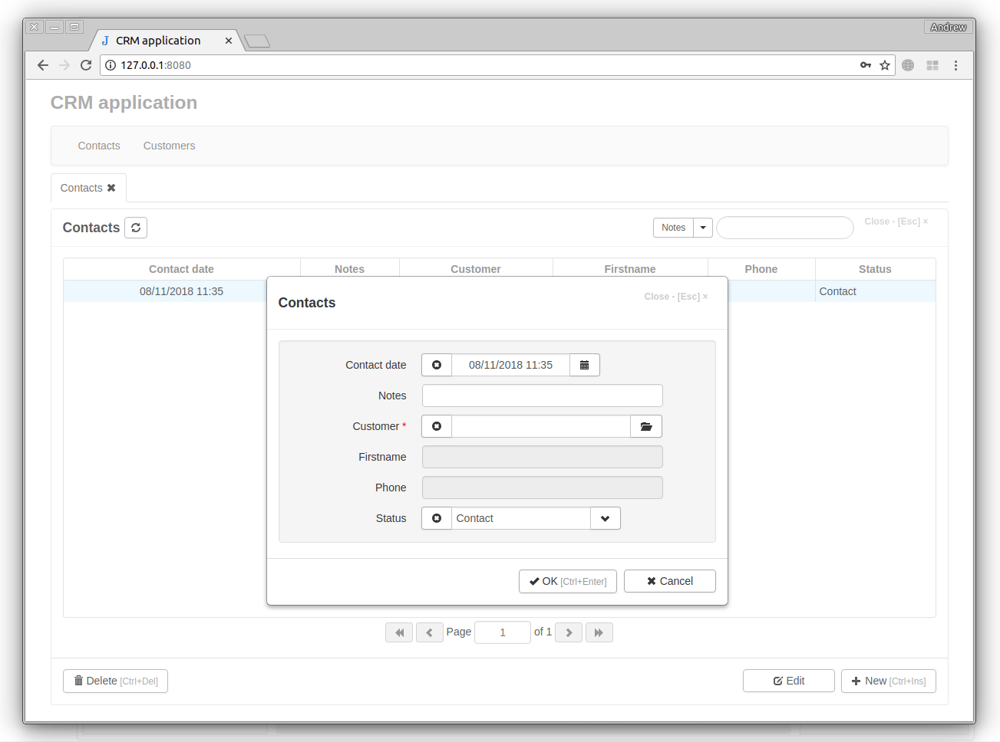
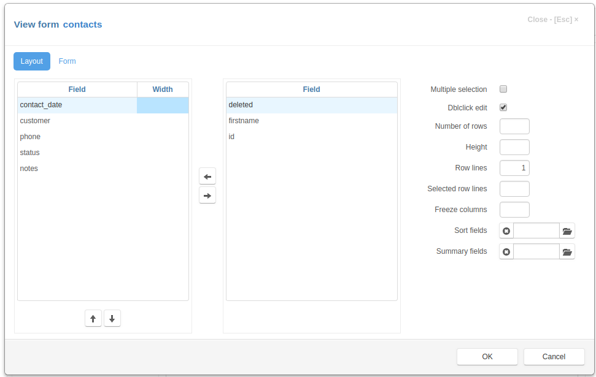
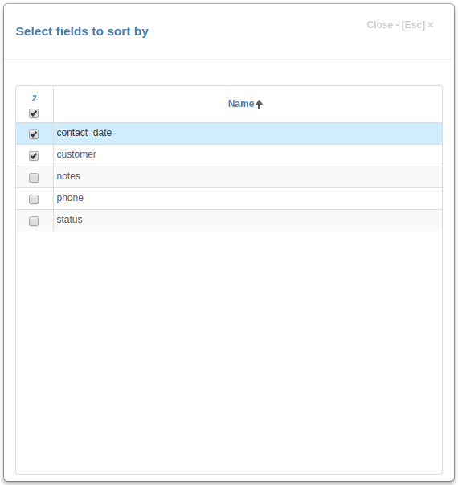
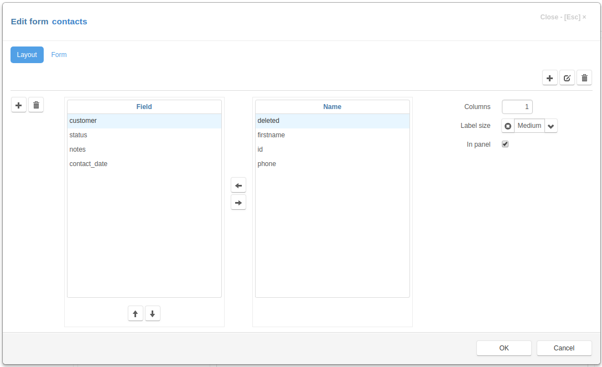
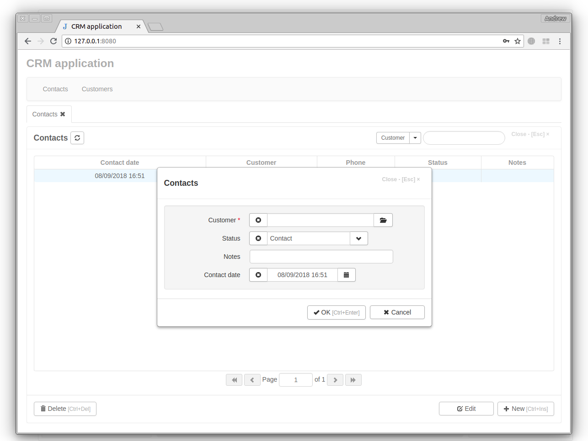

Customizing Forms¶
When we refresh the project page, we see that fields in the table and in the edit form of the “Contacts” journal are displayed in the order in which they were created.
To change how fields are displayed in the table, click the View Form button to open the View Form Dialog. Let’s change the displayed fields using left, right, up and down buttons.
In the example above, we have hidden the “firstname” field by selecting it and pressing the right arrow button, and we have moved the “notes” field to be last by selecting it and pressing the down button.
We can also change which fields can be used for sorting the table. To do this, click on the button right to the Sort fields input and select the corresponding column header of the table. Then save all changes by pressing OK.
To change the way the fields are displayed in the edit form, click the Edit Form button to open the Edit Form Dialog. This works in a very similar way to the View Form above.
To see the result of our work, go to the project page, refresh it and click the New button.
